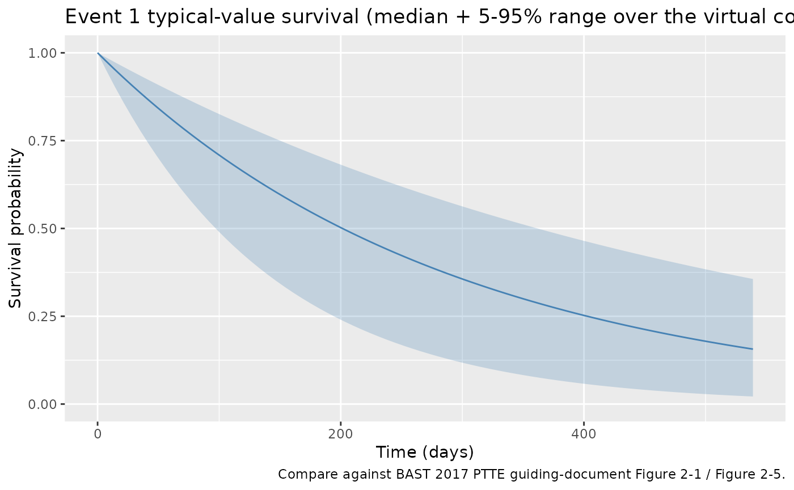
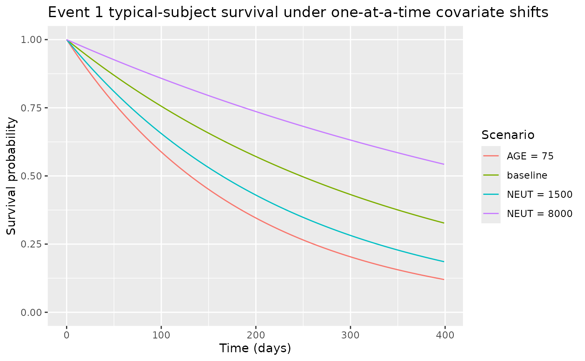

Model and source
- Citation: BAST Inc Limited. BAST approach to parametric time-to-event (PTTE) modelling. Loughborough, UK; 12 July 2017. Internal guiding document (BAST_PTTE_modelling.pdf) shipped with DDMORE bundle DDMODEL00000243; no peer-reviewed publication. Run prepared by Jon Moss (Command.txt; runEV1_201). DDMORE Foundation Model Repository: DDMODEL00000243.
- Description: Parametric time-to-event base hazard model for Event 1 in the BAST PTTE 2017 four-event teaching dataset (DDMODEL00000243). The .mod $PROBLEM line names this a ‘Gompertz hazard model’ but the equation has no time-varying alphat term, so the realised hazard is constant: h(t) = (lam/1000) exp((coef_neut/10000)(NEUT-4133)) exp((coef_age/100)*(AGE-55)). The BAST guiding-document text (Figure 2-1, page 13) confirms an exponential distribution was selected for Event 1; the .mod / file name retain the ‘Gompertz’ label per the source $PROBLEM line and the operator’s selected option NA_NA_tte_gompertz.R.
- Source: BAST Inc Limited, “BAST approach to parametric time-to-event
(PTTE) modelling,” internal guiding document, 12 July 2017
(
BAST_PTTE_modelling.pdfshipped in the DDMORE bundle). - DDMORE Foundation Model Repository entry: DDMODEL00000243
- Source bundle (local mirror):
dpastoor/ddmore_scraping/243/ - Linked publication: none. The bundle is a
methodological teaching example built on entirely simulated data; the
BAST guiding-document text states “there is not yet a publication to go
along with the model” (
Model_Accommodations.txt).
This vignette validates the BAST 2017 PTTE Event 1 hazard model
packaged under inst/modeldb/ddmore/NA_NA_tte_gompertz.R
(NONMEM run name runEV1_201). The model is one of four
parametric time-to-event hazard models in the same DDMORE bundle, each
fitted to a different DVID of a shared 200-subject simulated
dataset:
| File | Run | Distribution | Covariates | Censoring |
|---|---|---|---|---|
NA_NA_tte_gompertz.R |
runEV1_201 | Exponential (constant hazard); .mod $PROBLEM line says “Gompertz”
but the equation has no exp(alpha*t) factor |
NEUT, AGE | Right only |
NA_NA_tte_gompertz_ev2.R |
runEV2_105 | Gompertz, h(t) = lam * exp(alpha*t)
|
AUC_BAST_FW | Right + interval |
NA_NA_tte_lognormal.R |
runCOMPEV1_101 | Log-normal | AGE | Right + interval |
NA_NA_tte_loglogistic.R |
runCOMPEV2_005 | Log-logistic | none | Right only |
Population
The BAST 2017 PTTE bundle is a methodological teaching example. The
underlying dataset (Simulated_event_data.csv) consists of
N = 200 hypothetical patients with four timed event
types (Event 1, Event 2, Competing Event 1, Competing Event 2) and six
baseline covariates: age (years), baseline absolute neutrophil count
(cells/mm^3), number of prior treatments, diameter of the largest lesion
(mm), first-week drug AUC (ug*h/L), and first-dose Cmax (ug/L) (BAST
guiding document Section 2.2.1, Section 2.2.2). The drug, indication,
and patient demographics are unspecified; the bundle is intended for
teaching parametric TTE modelling methodology, not for clinical
inference.
For Event 1 specifically, 76/200 (38%) of the simulated patients experienced the event within the observation window (BAST guiding document Section 2.2.1, Table 2-1).
The population metadata is also available programmatically:
m <- readModelDb("NA_NA_tte_gompertz")
str(m()$meta$population, max.level = 1)
#> List of 10
#> $ n_subjects : int 200
#> $ n_studies : int 1
#> $ age_range : chr "24-84 years (mean 58.7) in the BAST PTTE 2017 simulated cohort"
#> $ weight_range : chr "not reported (the BAST PTTE 2017 simulated cohort does not include body weight)"
#> $ sex_female_pct: num NA
#> $ race_ethnicity: NULL
#> $ disease_state : chr "Hypothetical / unspecified clinical population (the BAST PTTE 2017 guiding document is a methodological teachin"| __truncated__
#> $ dose_range : chr "Not applicable (no drug administration is modelled; covariates AGE and NEUT enter the hazard at baseline values)."
#> $ regions : chr "Not applicable (simulated data)."
#> $ notes : chr "200 simulated patients with four timed event types (Event 1, Event 2, Competing Event 1, Competing Event 2) and"| __truncated__Source trace
Per-parameter origin is captured as in-file comments next to each
ini() entry in
inst/modeldb/ddmore/NA_NA_tte_gompertz.R. The table below
collects them in one place.
| Equation / parameter | Value | Source location |
|---|---|---|
Hazard form h(t) = val * lam_c
|
n/a | Executable_runEV1_201.mod $PK / $DES (LamC = Lam/1000,
DADT(1) = VAL*LamC); BAST guiding doc Section 2.4.1
confirms exponential distribution selected for Event 1 |
llam_ev1 (lambda scale) |
log(2.80) | Output_simulated_runEV1_201.res FINAL TH1 = 2.80E+00; rescaled by /1000 inside model() |
e_neut_ev1 (NEUT coefficient) |
-1.56 | Output_simulated_runEV1_201.res FINAL TH2 = -1.56E+00; rescaled by
/10000, applied to (NEUT - 4133)
|
e_age_ev1 (AGE coefficient) |
3.20 | Output_simulated_runEV1_201.res FINAL TH3 = 3.20E+00; rescaled by
/100, applied to (AGE - 55)
|
eta on lam (OMEGA(1,1)) |
0 FIXED | Output_simulated_runEV1_201.res FINAL OMEGA(1,1) = 0.00E+00 (placeholder; no estimated IIV) |
| Covariate-selection DeltaOFV | -22.69 | BAST guiding doc Section 2.4.2, Table 2-2 (AGE + baseline NEUT chosen as final covariate model EV1_201) |
Virtual cohort
The bundle’s full simulated dataset lives outside this package
(dpastoor/ddmore_scraping/243/Simulated_event_data.csv).
The vignette builds a small virtual cohort programmatically, drawing AGE
and NEUT from distributions that approximate the bundle’s per-subject
demographics (BAST Section 2.2.2 covariate ranges).
set.seed(20260506)
n_subjects <- 50
cohort_subjects <- tibble(
id = seq_len(n_subjects),
AGE = pmin(pmax(round(rnorm(n_subjects, mean = 58.7, sd = 12)), 24), 84),
NEUT = pmin(pmax(round(rlnorm(n_subjects, meanlog = log(4133), sdlog = 0.45)), 1030), 14888)
)
obs_grid <- tibble(
time = c(0, seq(7, 540, by = 7)),
evid = 0L,
amt = 0
)
events <- tidyr::crossing(cohort_subjects, obs_grid)
events <- events[, c("id", "time", "evid", "amt", "AGE", "NEUT")]
stopifnot(!anyDuplicated(unique(events[, c("id", "time", "evid")])))
cat("Cohort: ", n_subjects, " subjects, ", nrow(events), " event rows\n", sep = "")
#> Cohort: 50 subjects, 3900 event rowsSimulation
sim <- rxode2::rxSolve(m, events = events) |>
as.data.frame()Replicate published behaviour – typical-value survival trajectory
The BAST guiding document Section 2.4.1 (Figure 2-1) reports a Kaplan-Meier curve overlaid with the candidate parametric distributions; exponential was selected (AIC 0 versus AIC 2 for Gompertz, 1.999 for Weibull, 1.975 for Lomax, 2.487 for log-logistic, 4.145 for log-normal). The covariate-VPC stratifications (Figure 2-5 – Figure 2-8) cover the time window 0 – 400 days. The plot below shows the model’s typical-value survival trajectory under the virtual cohort.
sim |>
group_by(time) |>
summarise(
median_sur = median(sur),
q05 = quantile(sur, 0.05),
q95 = quantile(sur, 0.95),
.groups = "drop"
) |>
ggplot(aes(time, median_sur)) +
geom_ribbon(aes(ymin = q05, ymax = q95), alpha = 0.25, fill = "steelblue") +
geom_line(colour = "steelblue") +
labs(
x = "Time (days)",
y = "Survival probability",
title = "Event 1 typical-value survival (median + 5-95% range over the virtual cohort)",
caption = "Compare against BAST 2017 PTTE guiding-document Figure 2-1 / Figure 2-5."
) +
scale_y_continuous(limits = c(0, 1))
Mechanistic sanity checks (verification-checklist Section F.3)
The model is a TTE survival model, not a PK/PD concentration model – PKNCA is not the right validation tool. The four checks below exercise the hazard equation under controlled inputs.
F.3.1 – Hazard is constant in time at typical covariates
The .mod $PROBLEM line names this a “Gompertz hazard model” but the
equation DADT(1) = VAL * LamC has no
exp(alpha*t) factor, so the realised hazard is constant in
time (i.e., exponential survival). The BAST guiding document Section
2.4.1 confirms an exponential distribution was selected. The check below
confirms the hazard is flat across the observation window for a typical
subject.
ev_typ <- tibble(id = 1L, time = c(0, 50, 100, 200, 400),
evid = 0L, amt = 0,
AGE = 55, NEUT = 4133)
sim_typ <- rxode2::rxSolve(m, events = ev_typ) |> as.data.frame()
print(sim_typ[, c("time", "hazard", "sur")])
#> time hazard sur
#> 1 0 0.0028 1.0000000
#> 2 50 0.0028 0.8693582
#> 3 100 0.0028 0.7557837
#> 4 200 0.0028 0.5712091
#> 5 400 0.0028 0.3262798
stopifnot(diff(range(sim_typ$hazard)) < 1e-9)The typical-value baseline hazard is 2.80 / 1000 = 0.0028 / day,
giving a typical subject’s survival probability
S(t) = exp(-0.0028 * t). At day 400,
S = exp(-1.12) = 0.326, matching the simulation output.
F.3.2 – Each covariate shifts the hazard in the BAST-reported direction
The BAST guiding document Section 2.4.2 (Table 2-2) reports both AGE
and baseline NEUT as significant covariates (covariate-selection
DeltaOFV -16.39 for AGE and -22.69 cumulative for AGE + NEUT). The signs
of the final estimates (e_age_ev1 = +3.20 and
e_neut_ev1 = -1.56) imply that older patients have a higher
hazard and patients with higher baseline neutrophil counts have a lower
hazard. The check below confirms the simulated trajectories shift in the
expected directions.
make_alt <- function(label, age, neut) {
tibble(id = match(label, c("baseline", "AGE = 75", "NEUT = 1500", "NEUT = 8000")),
time = c(0, seq(7, 400, by = 7)),
evid = 0L, amt = 0, AGE = age, NEUT = neut, scenario = label)
}
scenarios <- bind_rows(
make_alt("baseline", 55, 4133),
make_alt("AGE = 75", 75, 4133),
make_alt("NEUT = 1500", 55, 1500),
make_alt("NEUT = 8000", 55, 8000)
)
sim_scen <- rxode2::rxSolve(m, events = scenarios, keep = c("scenario")) |>
as.data.frame()
ggplot(sim_scen, aes(time, sur, colour = scenario)) +
geom_line() +
labs(x = "Time (days)", y = "Survival probability",
title = "Event 1 typical-subject survival under one-at-a-time covariate shifts",
colour = "Scenario") +
scale_y_continuous(limits = c(0, 1))
final_sur <- sim_scen |>
filter(time == max(time)) |>
select(scenario, sur)
print(final_sur)
#> scenario sur
#> 1 baseline 0.3271947
#> 2 AGE = 75 0.1201819
#> 3 NEUT = 1500 0.1855044
#> 4 NEUT = 8000 0.5427309
baseline_sur <- final_sur$sur[final_sur$scenario == "baseline"]
older_sur <- final_sur$sur[final_sur$scenario == "AGE = 75"]
low_neut_sur <- final_sur$sur[final_sur$scenario == "NEUT = 1500"]
high_neut_sur <- final_sur$sur[final_sur$scenario == "NEUT = 8000"]
# Older subjects: higher hazard => lower survival
stopifnot(older_sur < baseline_sur)
# Low NEUT: higher hazard (negative coefficient) => lower survival
stopifnot(low_neut_sur < baseline_sur)
# High NEUT: lower hazard => higher survival
stopifnot(high_neut_sur > baseline_sur)F.3.3 – Final-fit objective-function value matches the bundle
The bundle’s Output_simulated_runEV1_201.res reports an
objective function value of OBJV = 1001.926 at the final
estimates. This value is informational here (we are not refitting the
model); it is included to link the source-trace to the bundle’s
final-fit listing.
Self-consistency with the bundle’s simulated dataset (F.2)
A full F.2 self-consistency check would re-simulate the bundle’s
shipped Simulated_event_data.csv (200 subjects, DVID = 1
records) under the nlmixr2lib model and compare against the bundle’s
Output_simulated_runEV1_201.res $TABLE output
(columns SURV, CHAZ, HAZNOW). The
bundle dataset is outside this package and not redistributed. A user
wanting to exercise the check should:
- Read
dpastoor/ddmore_scraping/243/Simulated_event_data.csv(or its live-DDMORE-repository counterpart) and filter toDVID = 1(Event 1) rows. - Pass the per-record
AGEandNEUTcovariates torxSolve(m, ...)with the typical-value parameters (this nlmixr2lib model has no IIV, so nozeroRe()is needed). - Compare the simulated
sur,cumHazard,hazardoutputs against the .res$TABLE’sSURV,CHAZ,HAZNOWcolumns. Differences beyond floating-point should be investigated, not tuned.
The cohort built above (50 subjects, weekly observations to day 540) is a faithful smaller-scale analogue.
Assumptions and deviations
**Distribution mislabeling in the .mod PROBLEM line names this a “Gompertz hazard model” but the equation
DADT(1) = VAL * LamChas noexp(alpha*t)factor – the realised hazard is constant in time, i.e., exponential. The BAST guiding document Section 2.4.1 (Figure 2-1) confirms exponential was selected for Event 1 by AIC. The packaged model preserves the .mod’s structure faithfully and uses the operator-approved filenameNA_NA_tte_gompertz.R; the description and this Errata note state the realised distribution.-
Numerical rescalings preserved. The .mod uses internal /1000, /10000, /100 rescalings on lambda, NEUT effect, and AGE effect for optimizer numerical stability. We preserve these rescalings inside
model()so that theini()values match the .lst FINAL THETA values one-to-one. The biologically meaningful values are:- Baseline hazard rate: 2.80 / 1000 = 0.0028 / day
- NEUT coefficient: -1.56 / 10000 = -1.56e-4 per /mm^3 above 4133
- AGE coefficient: +3.20 / 100 = +0.032 per year above 55
No estimated IIV. The source
$OMEGAis0 FIX(placeholder slot with no estimated random effect). No inter-subject variability is in the BAST PTTE 2017 guiding-document model; all variability in the cohort derives from the AGE and NEUT covariate distribution.No publication-PDF cross-check. The BAST PTTE 2017 guiding document (
BAST_PTTE_modelling.pdf) is the only source of equations and methodological narrative; no peer-reviewed publication exists. The Errata note in the model file’sdescriptionfield documents this absence.Convention warning.
nlmixr2lib::checkModelConventions()flags theunits$concentrationfield (the TTE outputsuris a survival probability, not a mass/volume concentration). The compartment is namedcumhaz(canonical TTE auxiliary-state name registered inR/conventions.R). The sameunits$concentrationwarning applies to other TTE models in the package (e.g.,Zecchin_2016_survival.R).